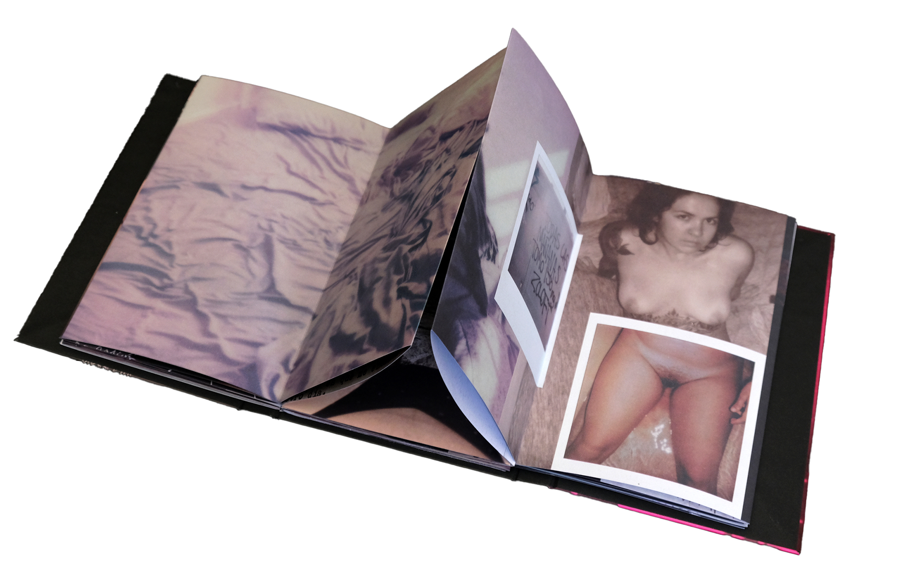
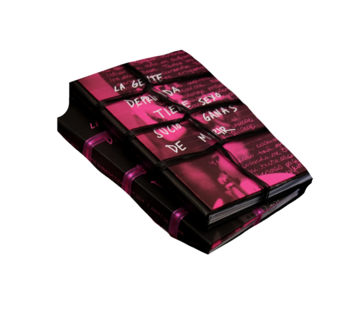
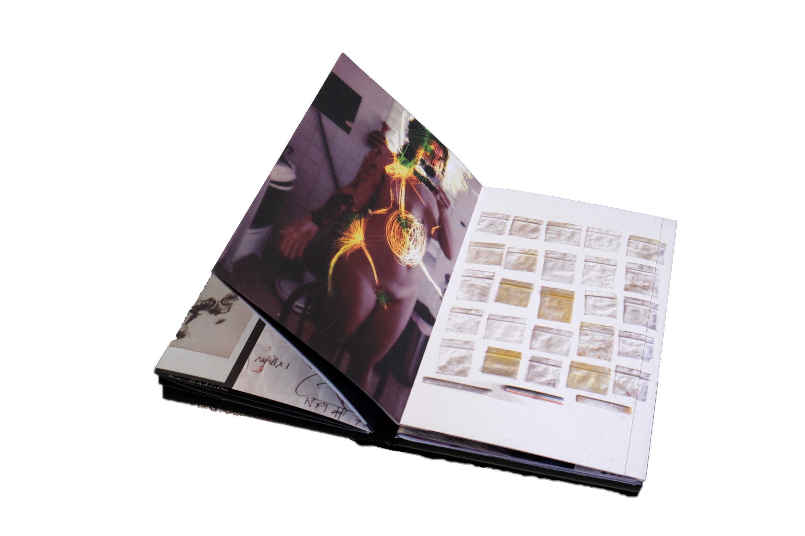
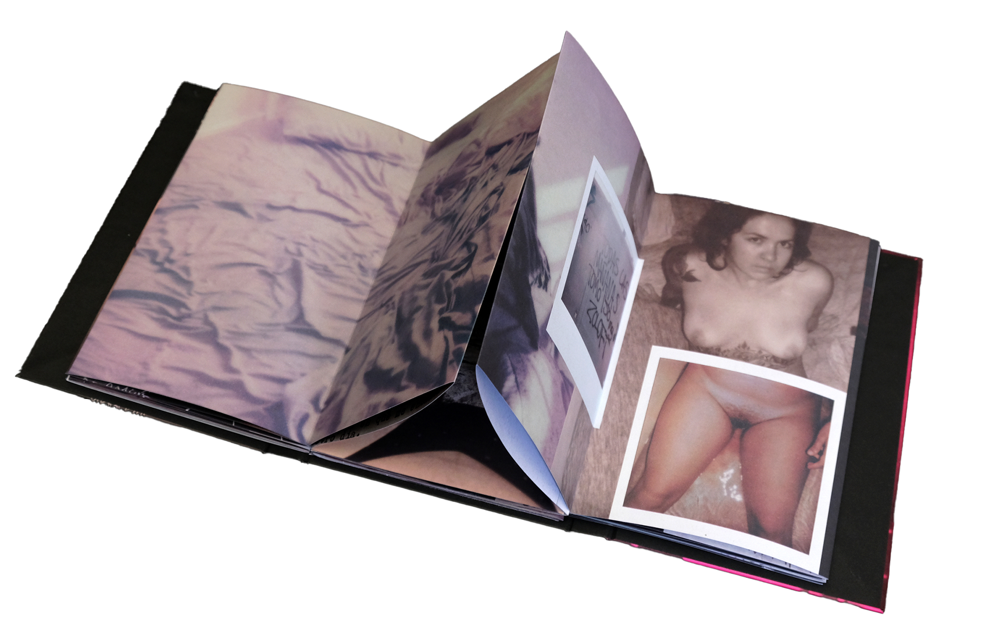
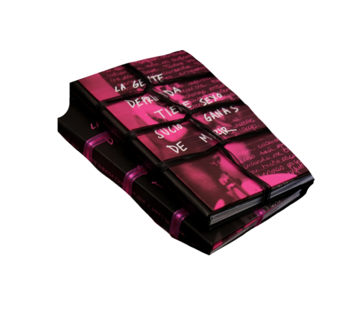
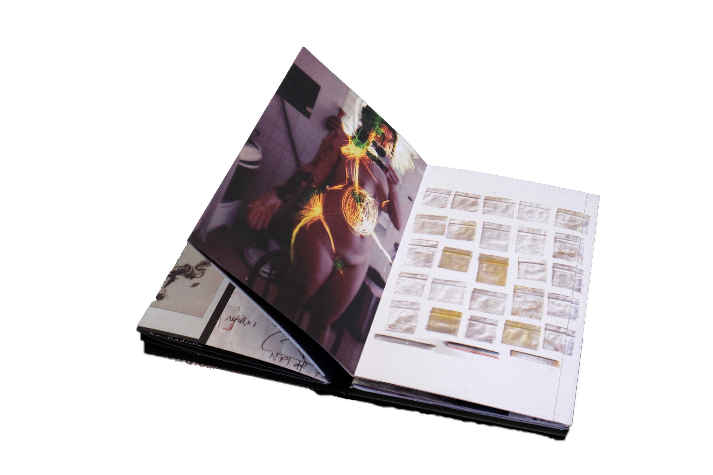

La gente deprimida tiene sexo sucio y ganas de morir es un diario hecho libro. Utilizando la fotografía Polaroid, dibujos y textos explora la compleja relación entre el sexo, la depresión y la identidad. Este diario-libro-objeto re&uactue;ne la crudeza, lo caótico y lo hermoso de dos años de 150mg de Zoloft, relaciones no-monógamas, duelos y placeres.
 




